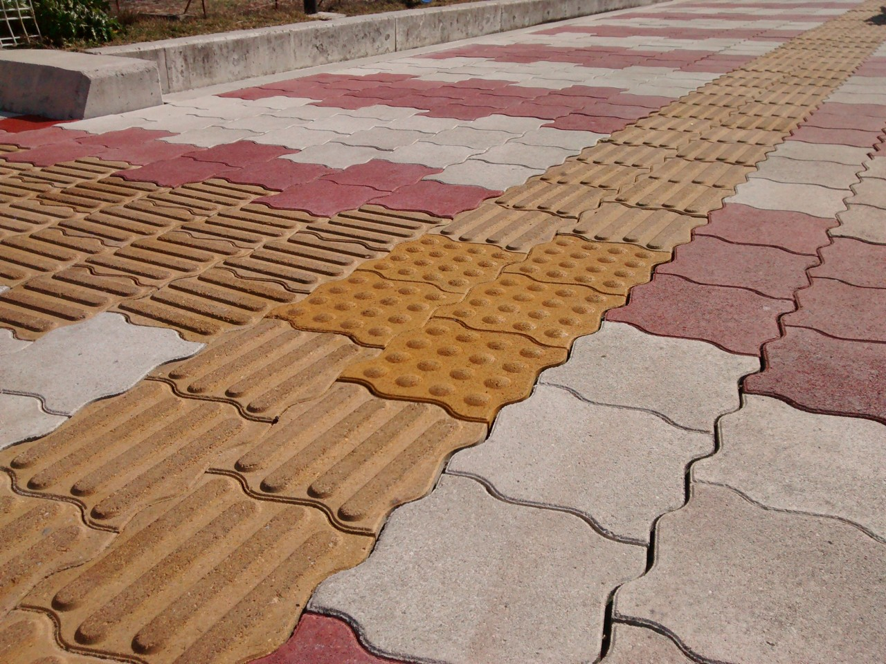

走過車站或人行道，腳下有時會出現一段凸起的直條，接著換成一片圓點。對習慣看路的人，那可能只是需要避開行李輪子的地面；對部分視障行人，紋路的變化卻能提供方向與位置資訊。它如何被辨認，又為什麼不能只靠看懂一塊磚，就理解整段路？
走路時，我們會利用建築邊緣、路緣、聲音和地面變化判斷位置。視力受限之後，這些線索的重要程度會改變，取得資訊的方式也因人而異。凸起鋪面讓使用者能透過鞋底或白手杖察覺材質與形狀的差別。要發揮作用，紋路必須足以被辨認，周圍地面也不能把這種差別混淆掉。導盲磚因此同時涉及磚的表面，以及它被放進什麼樣的道路。
這項設計與日本發明者三宅精一有關。日本國立障害者復健中心2003年的英文手冊記載，1967年3月，岡山盲校附近的國道首次鋪設這類觸覺地面標記。此後，應用逐漸從人行道擴展到鐵路月台等場所。手冊也把形狀規格、安裝方式，以及使用者的行走訓練放在一起討論。從一塊特殊鋪面到可使用的公共設施，中間還有共同辨認與正確配置的工作。
在這份日本手冊所述的配置裡，線狀磚主要用來指示行進方向，凸條沿著預定路線排列。使用者可以藉由腳下接觸或白手杖確認路線的位置。點狀磚則用於提醒可能的危險，或標示需要留意的設施位置。它可能出現在樓梯、月台或行人穿越處附近，也可能位於路線轉折與分岔處。因此，圓點的意義需要連同周圍位置判斷，不是每次都表示前方有相同的障礙。
紋路之間的連續關係同樣重要。沿著直條前進後遇到點狀區域，使用者需要進一步確認路線、設施或環境的變化。若相鄰地面本來就十分凹凸，白手杖探到的差別便較難分辨。若路線在不合理的位置中斷，尋找下一段也會增加困難。規劃者要安排的，既有局部可辨識的表面，也有前後能夠連接的路徑。

把這套概念帶到其他地方時，還需要認識當地的分類。英國交通部2021年版指引列出六種觸覺鋪面，區分行人穿越處、月台邊緣、危險警示與引導路徑等用途。其中，供引導路徑使用的凸條沿行進方向排列，適合缺少建築邊線或路緣線索的空間。另一種稱為corduroy的警示鋪面，則以橫跨行進方向的圓弧凸條，提示樓梯等特定危險。兩者都像一條條凸線，卻有不同的輪廓、間距與配置方式。
這個差別使「直條一律往前走」成為過度簡化的理解。使用者辨認的不只是照片裡的線條，還有觸感、相對方向與所在場所。英國指引中的行人穿越處圓點鋪面，也有自己的設置條件，不能與日本手冊中的所有點狀用途直接互換。這些例子適合用來理解設計如何傳遞資訊，而不是拿來判讀所有國家的街道。實際出行仍須依當地設施、定向行動訓練與現場情況判斷。
視障不等於完全沒有視覺資訊。英國皇家盲人協會RNIB在2021年的說明中，區分了不同使用者可能依賴的觸覺、聲音與視覺線索。仍有部分視力的人，可能利用鋪面與周圍地面的明暗對比，尋找穿越處的位置。完全相同的凸起形狀，若與背景混成一片，對這些使用者就少了一種辨認方式。在有號誌的行人穿越處，鋪面協助使用者找到位置，聲響與按鈕盒下方的旋轉錐體，則能提供不同的號誌資訊。這些線索各自處理一部分問題，必須與可辨認的人車邊界一起安排。
我們常在日本看見黃色導盲磚，但黃色不是所有地方通用的唯一選擇。日本手冊以黃色與瀝青地面的可見差異說明其常見原因；英國指引則另有紅色等配置規則。它也提醒，材料乾濕與光線條件會改變表面之間的明暗對比。選色時真正要確認的，是使用者在那個環境裡能否察覺差別。只把鋪面改成與周圍更協調的顏色，可能同時削弱它原本要保留的資訊。
設計文件區分出多種表面，不代表使用者都能輕易分辨。2020年為英國交通部準備的一份研究，結合問卷、焦點團體及街道實走，調查鋪面的使用經驗。256位問卷回覆者中，有172人自認為盲人或部分視力受損者。這個群體有76%正確理解行人穿越處圓點鋪面的意思，49%正確理解corduroy警示鋪面。這是該次問卷參與者的結果，呈現不同表面辨識難度的差異，讓我們看見規劃者還有哪些溝通與訓練工作。
研究中的實走參與者，也較難分辨幾種相似的線狀表面。這種困難涉及實際觸感，而非只是認不認識名稱。設計者要考慮穿鞋後能否感到差別、白手杖探測的結果，以及相鄰表面是否容易混淆。他們的經驗使問題從「規格有沒有寫清楚」，進一步轉向「人在街上能否可靠地使用」。英國現行官方介紹也強調，觸覺鋪面必須正確、一致，並從設計初期納入周圍空間。若相同安排在不同路口被任意改用，熟悉的線索就可能變得不可靠。與使用者共同檢查實際路線，才能發現平面圖或材料清單沒有充分呈現的困難。
鋪好之後，仍須確認這套安排能否持續有效。英國指引要求留意凸起表面的磨損，也要在道路工程後恢復相關鋪面。引導路徑周圍還需要保留沒有障礙物的空間，讓使用者、導盲犬以及不適合走在凸起表面上的人都有通路。輪椅使用者、腳部疼痛者與視障行人的需求，必須在整體配置裡一起考慮。多鋪幾片不是唯一目標，讓必要資訊保持可辨認、路線保持可通行，才是實際的工作。
這也改變了我們觀看熟悉街道的方式。UCLA無障礙計畫的一篇旅行札記中，作者回顧自己曾把日本的凸起鋪面視為拉行李的不便，回國研究後才理解其用途。這是一位旅人的經驗，卻提出很日常的問題：我們是否因為自己不需要某種線索，就忽略了別人如何使用它？在導盲磚上停放物品，會讓原本預定的路徑多出障礙。理解這些鋪面，不只是在辨認圓點和直條，也是在理解同一段路為不同使用者保留了哪些條件。